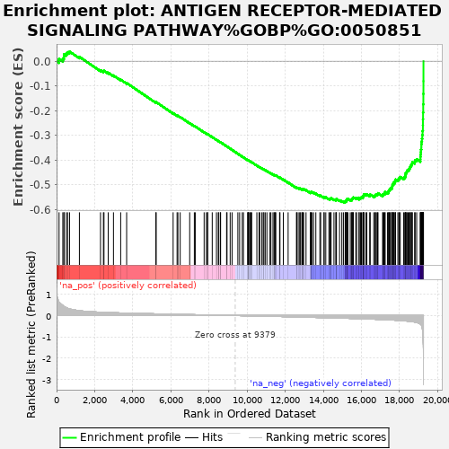

| | | Dataset | rankedList |
| Phenotype | NoPhenotypeAvailable |
| Upregulated in class | na_neg |
| GeneSet | ANTIGEN RECEPTOR-MEDIATED SIGNALING PATHWAY%GOBP%GO:0050851 |
| Enrichment Score (ES) | -0.571986 |
| Normalized Enrichment Score (NES) | -2.5664456 |
| Nominal p-value | 0.0 |
| FDR q-value | 0.0 |
| FWER p-Value | 0.0 |
Table: GSEA Results Summary

Fig 1: Enrichment plot: ANTIGEN RECEPTOR-MEDIATED SIGNALING PATHWAY%GOBP%GO:0050851
Profile of the Running ES Score & Positions of GeneSet Members on the Rank Ordered List
| PROBE | GENE SYMBOL | GENE_TITLE | RANK IN GENE LIST | RANK METRIC SCORE | RUNNING ES | CORE ENRICHMENT | | 1 | PSME4 | | | 130 | 0.630 | 0.0089 | No |
| 2 | STK11 | | | 327 | 0.478 | 0.0105 | No |
| 3 | PIK3R2 | | | 385 | 0.435 | 0.0183 | No |
| 4 | ERMAP | | | 396 | 0.424 | 0.0283 | No |
| 5 | PSMF1 | | | 511 | 0.370 | 0.0315 | No |
| 6 | STOML2 | | | 582 | 0.341 | 0.0364 | No |
| 7 | HLA-DRB5 | | | 681 | 0.312 | 0.0390 | No |
| 8 | PSMD4 | | | 1198 | 0.227 | 0.0176 | No |
| 9 | BTNL9 | | | 2306 | 0.156 | -0.0366 | No |
| 10 | TNFRSF21 | | | 2459 | 0.150 | -0.0409 | No |
| 11 | TAB2 | | | 2489 | 0.149 | -0.0387 | No |
| 12 | CRKL | | | 2710 | 0.141 | -0.0467 | No |
| 13 | PSMB11 | | | 2986 | 0.132 | -0.0579 | No |
| 14 | PSMD2 | | | 3365 | 0.121 | -0.0747 | No |
| 15 | HRAS | | | 3678 | 0.113 | -0.0882 | No |
| 16 | SPPL3 | | | 5212 | 0.079 | -0.1667 | No |
| 17 | RC3H2 | | | 5228 | 0.079 | -0.1655 | No |
| 18 | LIME1 | | | 6118 | 0.061 | -0.2106 | No |
| 19 | MAPK1 | | | 6325 | 0.057 | -0.2200 | No |
| 20 | CD276 | | | 6369 | 0.056 | -0.2209 | No |
| 21 | MOG | | | 6489 | 0.054 | -0.2258 | No |
| 22 | BTNL2 | | | 6987 | 0.045 | -0.2507 | No |
| 23 | PSMD9 | | | 7231 | 0.040 | -0.2625 | No |
| 24 | SKP1 | | | 7279 | 0.039 | -0.2640 | No |
| 25 | BTN1A1 | | | 7745 | 0.030 | -0.2876 | No |
| 26 | PRAM1 | | | 7863 | 0.028 | -0.2931 | No |
| 27 | BTRC | | | 7929 | 0.027 | -0.2958 | No |
| 28 | WNK1 | | | 7930 | 0.027 | -0.2951 | No |
| 29 | LYN | | | 8170 | 0.023 | -0.3071 | No |
| 30 | PAK3 | | | 8392 | 0.018 | -0.3183 | No |
| 31 | ZC3H12A | | | 8488 | 0.016 | -0.3228 | No |
| 32 | PTPRJ | | | 8516 | 0.016 | -0.3239 | No |
| 33 | PSMB9 | | | 8600 | 0.014 | -0.3279 | No |
| 34 | BTN2A1 | | | 8610 | 0.014 | -0.3280 | No |
| 35 | PIK3CD | | | 8924 | 0.008 | -0.3442 | No |
| 36 | BCL10 | | | 8947 | 0.008 | -0.3451 | No |
| 37 | PAK2 | | | 9112 | 0.005 | -0.3536 | No |
| 38 | DENND1B | | | 9212 | 0.003 | -0.3587 | No |
| 39 | PSMD1 | | | 9516 | -0.003 | -0.3746 | No |
| 40 | PSMD3 | | | 9609 | -0.005 | -0.3793 | No |
| 41 | IKBKG | | | 9747 | -0.007 | -0.3863 | No |
| 42 | MAP3K7 | | | 9808 | -0.009 | -0.3892 | No |
| 43 | PRKD2 | | | 10031 | -0.013 | -0.4006 | No |
| 44 | PSME1 | | | 10045 | -0.013 | -0.4009 | No |
| 45 | PAK1 | | | 10061 | -0.013 | -0.4014 | No |
| 46 | VTCN1 | | | 10068 | -0.013 | -0.4014 | No |
| 47 | CHUK | | | 10124 | -0.014 | -0.4039 | No |
| 48 | BCAR1 | | | 10168 | -0.015 | -0.4058 | No |
| 49 | SPG21 | | | 10203 | -0.016 | -0.4071 | No |
| 50 | IGHE | | | 10241 | -0.017 | -0.4087 | No |
| 51 | PTPRC | | | 10513 | -0.022 | -0.4223 | No |
| 52 | PIK3CA | | | 10627 | -0.024 | -0.4277 | No |
| 53 | CD247 | | | 10664 | -0.025 | -0.4289 | No |
| 54 | IGLL1 | | | 10776 | -0.027 | -0.4341 | No |
| 55 | EIF2B5 | | | 10847 | -0.029 | -0.4370 | No |
| 56 | HLA-A | | | 10883 | -0.029 | -0.4381 | No |
| 57 | WAS | | | 10951 | -0.031 | -0.4409 | No |
| 58 | BAX | | | 11040 | -0.033 | -0.4447 | No |
| 59 | FYB | | | 11202 | -0.036 | -0.4522 | No |
| 60 | RC3H1 | | | 11250 | -0.037 | -0.4538 | No |
| 61 | PSMB8 | | | 11359 | -0.039 | -0.4585 | No |
| 62 | BTNL8 | | | 11419 | -0.041 | -0.4605 | No |
| 63 | SLA2 | | | 11449 | -0.041 | -0.4610 | No |
| 64 | PSME3 | | | 11481 | -0.042 | -0.4616 | No |
| 65 | BTN3A1 | | | 11507 | -0.042 | -0.4619 | No |
| 66 | CACNB3 | | | 11706 | -0.046 | -0.4711 | No |
| 67 | PSMD6 | | | 11726 | -0.047 | -0.4710 | No |
| 68 | THEMIS2 | | | 11902 | -0.050 | -0.4789 | No |
| 69 | LAT2 | | | 12154 | -0.056 | -0.4907 | No |
| 70 | PSMA7 | | | 12591 | -0.067 | -0.5119 | No |
| 71 | PSMD12 | | | 12608 | -0.067 | -0.5111 | No |
| 72 | CSK | | | 12681 | -0.068 | -0.5132 | No |
| 73 | MNDA | | | 12762 | -0.070 | -0.5156 | No |
| 74 | RNF31 | | | 12789 | -0.070 | -0.5152 | No |
| 75 | RELA | | | 12875 | -0.072 | -0.5179 | No |
| 76 | PSMB3 | | | 12887 | -0.073 | -0.5166 | No |
| 77 | FBXW11 | | | 12935 | -0.074 | -0.5173 | No |
| 78 | FOXP3 | | | 12967 | -0.075 | -0.5170 | No |
| 79 | THY1 | | | 13094 | -0.078 | -0.5217 | No |
| 80 | HLA-DQB1 | | | 13317 | -0.083 | -0.5313 | No |
| 81 | INPP5D | | | 13347 | -0.084 | -0.5307 | No |
| 82 | GRAP2 | | | 13355 | -0.084 | -0.5290 | No |
| 83 | FYN | | | 13405 | -0.085 | -0.5295 | No |
| 84 | PSMA6 | | | 13489 | -0.087 | -0.5317 | No |
| 85 | LCP2 | | | 13609 | -0.090 | -0.5357 | No |
| 86 | PTPN6 | | | 13820 | -0.095 | -0.5443 | No |
| 87 | PSMD5 | | | 13863 | -0.096 | -0.5442 | No |
| 88 | RBCK1 | | | 14037 | -0.100 | -0.5508 | No |
| 89 | NFATC2 | | | 14044 | -0.100 | -0.5486 | No |
| 90 | ZAP70 | | | 14131 | -0.102 | -0.5506 | No |
| 91 | BTN3A2 | | | 14295 | -0.106 | -0.5565 | No |
| 92 | PSMC3 | | | 14344 | -0.107 | -0.5563 | No |
| 93 | NCK1 | | | 14385 | -0.108 | -0.5557 | No |
| 94 | PSMB10 | | | 14408 | -0.109 | -0.5542 | No |
| 95 | IGHV7-81 | | | 14560 | -0.113 | -0.5593 | No |
| 96 | VAV3 | | | 14662 | -0.115 | -0.5617 | No |
| 97 | PSMD8 | | | 14668 | -0.115 | -0.5591 | No |
| 98 | PSMC1 | | | 14690 | -0.116 | -0.5574 | No |
| 99 | NFKB1 | | | 14853 | -0.119 | -0.5629 | No |
| 100 | PSMB1 | | | 14973 | -0.123 | -0.5661 | No |
| 101 | NFKBID | | | 15056 | -0.125 | -0.5673 | No |
| 102 | PLCG2 | | | 15147 | -0.128 | -0.5688 | Yes |
| 103 | PRKCB | | | 15163 | -0.128 | -0.5664 | Yes |
| 104 | PSEN1 | | | 15186 | -0.129 | -0.5644 | Yes |
| 105 | ABL1 | | | 15228 | -0.130 | -0.5633 | Yes |
| 106 | PDE4B | | | 15230 | -0.130 | -0.5601 | Yes |
| 107 | PSMB5 | | | 15244 | -0.130 | -0.5576 | Yes |
| 108 | PSMC5 | | | 15292 | -0.131 | -0.5568 | Yes |
| 109 | UBE2N | | | 15417 | -0.135 | -0.5599 | Yes |
| 110 | PAG1 | | | 15492 | -0.136 | -0.5604 | Yes |
| 111 | PSMD11 | | | 15502 | -0.137 | -0.5575 | Yes |
| 112 | PDE4D | | | 15524 | -0.138 | -0.5552 | Yes |
| 113 | LAX1 | | | 15558 | -0.138 | -0.5535 | Yes |
| 114 | RIPK2 | | | 15577 | -0.139 | -0.5510 | Yes |
| 115 | PSMD14 | | | 15702 | -0.143 | -0.5539 | Yes |
| 116 | PSMB6 | | | 15751 | -0.144 | -0.5529 | Yes |
| 117 | LAT | | | 15878 | -0.148 | -0.5558 | Yes |
| 118 | NFKBIZ | | | 15882 | -0.148 | -0.5523 | Yes |
| 119 | PSMB7 | | | 15952 | -0.150 | -0.5522 | Yes |
| 120 | PIK3CB | | | 16002 | -0.151 | -0.5510 | Yes |
| 121 | BTN3A3 | | | 16074 | -0.153 | -0.5509 | Yes |
| 122 | LCK | | | 16092 | -0.154 | -0.5480 | Yes |
| 123 | CD3E | | | 16111 | -0.154 | -0.5451 | Yes |
| 124 | EIF2B4 | | | 16116 | -0.154 | -0.5414 | Yes |
| 125 | IGHV1OR15-9 | | | 16132 | -0.155 | -0.5384 | Yes |
| 126 | HLA-DQB2 | | | 16237 | -0.159 | -0.5399 | Yes |
| 127 | PSMC6 | | | 16284 | -0.160 | -0.5383 | Yes |
| 128 | PSMD13 | | | 16438 | -0.165 | -0.5422 | Yes |
| 129 | ICOSLG | | | 16463 | -0.166 | -0.5393 | Yes |
| 130 | PTPN22 | | | 16648 | -0.172 | -0.5447 | Yes |
| 131 | PSMD10 | | | 16714 | -0.175 | -0.5438 | Yes |
| 132 | PSMB4 | | | 16740 | -0.176 | -0.5407 | Yes |
| 133 | PSMD7 | | | 16791 | -0.178 | -0.5389 | Yes |
| 134 | PSME2 | | | 16851 | -0.180 | -0.5375 | Yes |
| 135 | PSMC2 | | | 16872 | -0.181 | -0.5341 | Yes |
| 136 | CARD11 | | | 17114 | -0.191 | -0.5420 | Yes |
| 137 | PSMA2 | | | 17132 | -0.192 | -0.5381 | Yes |
| 138 | NCKAP1L | | | 17182 | -0.193 | -0.5359 | Yes |
| 139 | SYK | | | 17238 | -0.196 | -0.5339 | Yes |
| 140 | PIK3R1 | | | 17241 | -0.196 | -0.5291 | Yes |
| 141 | HLA-DRB1 | | | 17367 | -0.201 | -0.5307 | Yes |
| 142 | BTK | | | 17428 | -0.204 | -0.5288 | Yes |
| 143 | PRKCQ | | | 17431 | -0.204 | -0.5238 | Yes |
| 144 | PLEKHA1 | | | 17465 | -0.205 | -0.5204 | Yes |
| 145 | PSMA1 | | | 17501 | -0.207 | -0.5171 | Yes |
| 146 | HLA-DRB3 | | | 17532 | -0.208 | -0.5135 | Yes |
| 147 | BTN2A2 | | | 17602 | -0.211 | -0.5119 | Yes |
| 148 | PSMC4 | | | 17618 | -0.212 | -0.5074 | Yes |
| 149 | PSMA5 | | | 17627 | -0.212 | -0.5026 | Yes |
| 150 | IKBKB | | | 17632 | -0.212 | -0.4975 | Yes |
| 151 | PSMB2 | | | 17690 | -0.215 | -0.4951 | Yes |
| 152 | SKAP1 | | | 17695 | -0.215 | -0.4900 | Yes |
| 153 | BCL2 | | | 17766 | -0.219 | -0.4882 | Yes |
| 154 | KLHL6 | | | 17772 | -0.219 | -0.4831 | Yes |
| 155 | PSMA4 | | | 17794 | -0.220 | -0.4787 | Yes |
| 156 | GATA3 | | | 17914 | -0.226 | -0.4793 | Yes |
| 157 | TRAF6 | | | 17969 | -0.229 | -0.4764 | Yes |
| 158 | CD3G | | | 17992 | -0.231 | -0.4718 | Yes |
| 159 | PSMA3 | | | 18038 | -0.234 | -0.4684 | Yes |
| 160 | CTLA4 | | | 18219 | -0.248 | -0.4717 | Yes |
| 161 | CD28 | | | 18275 | -0.252 | -0.4683 | Yes |
| 162 | THEMIS | | | 18311 | -0.253 | -0.4638 | Yes |
| 163 | CD4 | | | 18318 | -0.254 | -0.4578 | Yes |
| 164 | EIF2B2 | | | 18325 | -0.254 | -0.4518 | Yes |
| 165 | TEC | | | 18372 | -0.259 | -0.4478 | Yes |
| 166 | CD3D | | | 18394 | -0.260 | -0.4424 | Yes |
| 167 | EIF2B3 | | | 18454 | -0.267 | -0.4389 | Yes |
| 168 | CUL1 | | | 18507 | -0.272 | -0.4349 | Yes |
| 169 | PLCG1 | | | 18535 | -0.274 | -0.4295 | Yes |
| 170 | RFTN1 | | | 18574 | -0.278 | -0.4246 | Yes |
| 171 | EIF2B1 | | | 18613 | -0.282 | -0.4195 | Yes |
| 172 | TRAT1 | | | 18651 | -0.287 | -0.4143 | Yes |
| 173 | MALT1 | | | 18675 | -0.289 | -0.4084 | Yes |
| 174 | ITK | | | 18795 | -0.306 | -0.4070 | Yes |
| 175 | TXK | | | 18819 | -0.310 | -0.4005 | Yes |
| 176 | CD19 | | | 18902 | -0.328 | -0.3967 | Yes |
| 177 | BLK | | | 19094 | -0.398 | -0.3968 | Yes |
| 178 | CD38 | | | 19098 | -0.399 | -0.3870 | Yes |
| 179 | HLA-DPB1 | | | 19105 | -0.407 | -0.3772 | Yes |
| 180 | HLA-DPA1 | | | 19120 | -0.419 | -0.3675 | Yes |
| 181 | HLA-DRA | | | 19125 | -0.421 | -0.3572 | Yes |
| 182 | HLA-DQA2 | | | 19146 | -0.441 | -0.3473 | Yes |
| 183 | MEF2C | | | 19147 | -0.441 | -0.3364 | Yes |
| 184 | HLA-DQA1 | | | 19154 | -0.450 | -0.3255 | Yes |
| 185 | PDPK1 | | | 19179 | -0.529 | -0.3136 | Yes |
| 186 | IGHV3OR16-8 | | | 19198 | -0.635 | -0.2988 | Yes |
| 187 | CD79B | | | 19210 | -0.700 | -0.2819 | Yes |
| 188 | IGHV1OR15-1 | | | 19228 | -0.951 | -0.2592 | Yes |
| 189 | IGHV3-35 | | | 19231 | -0.970 | -0.2352 | Yes |
| 190 | IGHV3-73 | | | 19237 | -1.114 | -0.2077 | Yes |
| 191 | IGHV3-74 | | | 19245 | -1.345 | -0.1746 | Yes |
| 192 | IGHV3-43 | | | 19253 | -1.725 | -0.1321 | Yes |
| 193 | CD79A | | | 19257 | -2.065 | -0.0809 | Yes |
| 194 | MS4A1 | | | 19258 | -3.253 | -0.0000 | Yes |
Table: GSEA details [plain text format]
Fig 2: ANTIGEN RECEPTOR-MEDIATED SIGNALING PATHWAY%GOBP%GO:0050851: Random ES distribution
Gene set null distribution of ES for ANTIGEN RECEPTOR-MEDIATED SIGNALING PATHWAY%GOBP%GO:0050851